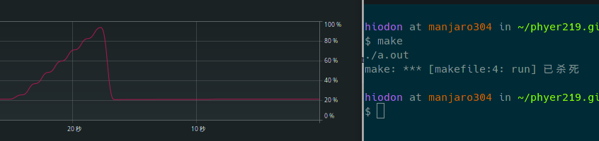

C 中的指针与动态内存分配
主要是为 Reference 存个书签.
Pointers
在写程序的过程中, array 是相当有用的. 但是 array 是静态的, 也就是它的大小不能改 变. 此时指针就派上用场.
在 C 中, pointer 表示一个 data 的内存地址. 如果一个 pointer 为 0, 那它叫做 null pointer, 也叫 NULL , "nil" .
Declarations
指针声明的方式是, 在一个已经存在的数据类型前加一个 *. 如
int *ip;声明了一个名为 ip 的 pointer 指向一个整数.
创建一个指针的方法是用算符 & (address-of) . 顾名思义, 它作用到一个变量后, 得到它
的地址. 如
int *ip;
int x;
x = 42;
ip = &x;将 42 赋值给 x, 将 x 的地址赋值给 ip.
Using a pointer
使用 pointer 的方法是使用算符 * , 它叫做 dereference operator. 它作用在一个指针
上, 得到的结果是它指向的内存地址中的值.
printf("%d %d\n", x, *ip);会输出 42 42 .
也可以
*ip = 37;此时, 这块内存中的值就变成了 37 .
Memory allocation and deallocation
一般来讲, 把一个指针指向一个已经声明的变量, 没什么用. 真正有用的是用它来分配一块 没有使用的内存. 这使得程序能够处理大量的内存.
基本的内存分配函数是
(void *) malloc(size_t numbytes);它的意思是分出一定数量的内存空间, 并返回一个指向它的指针. 由于 malloc 不知道你 想要什么类型的指针, 它返回的是 pointer to void, 也就是指向一块数据类型不明的区域.
常用的是把它和内置算符 sizeof() 放在一起用. sizeof() 返回特定数据类型的比特
数. 如
int *ip;
ip = (int *) malloc(sizeof(int));这将分配出 1 个 int 大小的内存, 将其指针给 ip .
Pointers and arrays
分配单个整型大小的内存没什么用, 有用的是 allocate arrays. 实际上, 指针可以当作一 个 array 用. 如
int *ip;
ip = (int *) malloc( sizeof(int)*10 ); // allocate 10 ints
ip[6] = 42; // set the 7th element to 42
ip[10] = 99; // WRONG: array only has 10 elements
(this would corrupted memory!)Freeing memory, and memory leaks
如果有以下 code
int *ip;
ip = (int *) malloc( sizeof(int)*10 ); // allocate 10 ints
... (use the array, etc.)
ip = (int *) malloc( sizeof(int)*100 ); // allocate 100 ints
...它没有金鼓齐鸣. 可以给一个指针重新赋值. 但是重新赋值之后, 之前分出的那 10 ints 的内存呢? 答案是它永远地消失了, 直到程序结束. 这叫内存(memory leak). 虽然这 10 ints 内存是被分配的, 但程序再也无法使用这些内存了.
解决方法是, 在 C 或者 C++ 中, 当被分配的内存用完后, 可以通过 free() 来释放内存.
如
ip = (int *) malloc( sizeof(int)*10 ); // allocate 10 ints
... (use the array, etc.)
free(ip); // de-allocate old array
ip = (int *) malloc( sizeof(int)*100 ); // allocate 100 ints
...上面的 code 就不会发生内存泄漏. 有一些语言 (如 Java) 会自动清理分配的内存, 这叫 automatic garbage collection , 但是 C 和 C++ 没有这种机制. 所以你在用完后, 应该 负责释放掉它们.
Pointers and arrays
pointers 可以用 array 的指标, 或者说, 一个数组的名字本质上就是一个 constant pointer.
int *p;
int a[10];
p = (int*) malloc(sizeof(int)*20);
p[2] = 100; // set 3rd element in alloc'd array to 100
*(p+2) = 100; // same thing
a[2] = 200; // set 3rd element in regulary array to 200
*(a+2) = 200; // same thing指针和数组是不同的, 但是当指针被用来 access 一块区域时, 用法是一样的. 但是
- the array declares a block of some datatype while a pointer only declares space for itself (the data area needs malloc'd) 数组会声明一块特定数据类型的区域, 而指针只会声明这块空间本身. - The address of the array (i.e., a pointer to it) is not stored anywhere; the compiler figures it out while it is compiling your program, so when you use the array name as a pointer, you are essentially using a constant number as an address. 数组的地址没有存在任何地方, 编译器编译的时候才搞清它. 所以将数组的名字当作指针 使用的时候, 本质上是将一个常数当作地址使用.
Pointers and arrays as arguments
有一个地方,指针和数组几乎是完全相同的, 那就是 当它们作为一个函数的参数的时候. 这 是因为 agruments pass only the address of the array to the function. 也就是说数 组作为指针传递.
在 C 中, 大部分值的传递方法是 call-by-value, 函数得到的是值的一个副本, 函数不会 改变原来的值. 但数组的传递方法是 call-by-reference, 传递的是指针, 而不是数组本 身.
如果传递数组时, 传递一个副本的话, 当数组非常大时, 那是非常浪费的. 所以数值的传递 方法是 call-by-reference. 这也意味着函数中对数组的修改, 会直接修改原来的数组.
因此, 下面的声明是等价的
int func(int A[]);
int func(int *A);How to dynamically allocate a 2D array in C?
有四种方法能够动态的给一个二维数组赋值. 比如
1 2 3 4
5 6 7 8
9 10 11 121. Using a single pointer
#include <stdio.h>
#include <stdlib.h>
int main()
{
int r = 3, c = 4;
int *arr = (int *)malloc(r * c * sizeof(int));
int i, j, count = 0;
for (i = 0; i < r; i++)
for (j = 0; j < c; j++)
*(arr + i*c + j) = ++count;
for (i = 0; i < r; i++)
for (j = 0; j < c; j++)
printf("%d ", *(arr + i*c + j));
/* Code for further processing and free the
dynamically allocated memory */
return 0;
}2. Using an array of pointers
#include <stdio.h>
#include <stdlib.h>
int main()
{
int r = 3, c = 4, i, j, count;
int *arr[r];
for (i=0; i<r; i++)
arr[i] = (int *)malloc(c * sizeof(int));
// Note that arr[i][j] is same as *(*(arr+i)+j)
count = 0;
for (i = 0; i < r; i++)
for (j = 0; j < c; j++)
arr[i][j] = ++count; // Or *(*(arr+i)+j) = ++count
for (i = 0; i < r; i++)
for (j = 0; j < c; j++)
printf("%d ", arr[i][j]);
/* Code for further processing and free the
dynamically allocated memory */
return 0;
}3. Using pointer to a pointer
#include <stdio.h>
#include <stdlib.h>
int main()
{
int r = 3, c = 4, i, j, count;
int **arr = (int **)malloc(r * sizeof(int *));
for (i=0; i<r; i++)
arr[i] = (int *)malloc(c * sizeof(int));
// Note that arr[i][j] is same as *(*(arr+i)+j)
count = 0;
for (i = 0; i < r; i++)
for (j = 0; j < c; j++)
arr[i][j] = ++count; // OR *(*(arr+i)+j) = ++count
for (i = 0; i < r; i++)
for (j = 0; j < c; j++)
printf("%d ", arr[i][j]);
/* Code for further processing and free the
dynamically allocated memory */
return 0;
}4. Using double pointer and one malloc call
#include<stdio.h>
#include<stdlib.h>
int main()
{
int r=3, c=4, len=0;
int *ptr, **arr;
int count = 0,i,j;
len = sizeof(int *) * r + sizeof(int) * c * r;
arr = (int **)malloc(len);
// ptr is now pointing to the first element in of 2D array
ptr = (int *)(arr + r);
// for loop to point rows pointer to appropriate location in 2D array
for(i = 0; i < r; i++)
arr[i] = (ptr + c * i);
for (i = 0; i < r; i++)
for (j = 0; j < c; j++)
arr[i][j] = ++count; // OR *(*(arr+i)+j) = ++count
for (i = 0; i < r; i++)
for (j = 0; j < c; j++)
printf("%d ", arr[i][j]);
return 0;
}Memory leak
下面的 code 可以演示内存泄漏
include <stdio.h>
#include <stdlib.h>
void f(void)
{
void* s;
s = malloc(50); /* 申请内存空间 */
return; /* 内在泄漏 - 参见以下资料 */
/*
* s 指向新分配的堆空间。
* 当此函数返回，离开局部变量s的作用域后将无法得知s的值，
* 分配的内存空间不能被释放。
*
* 如要「修复」这个问题，必须想办法释放分配的堆空间，
* 也可以用alloca(3)代替malloc(3)。
* （注意：alloca(3)既不是ANSI函数也不是POSIX函数）
*/
}
int main(void)
{
/* 该函数是一个死循环函数 */
while (1) f(); /* Malloc函数迟早会由于内存泄漏而返回NULL*/
return 0;
}结果是几秒后内存就满了. 但是系统会有保护机制? 直接杀掉了进程([[file:2021-05-14-coding-C_pointer_malloc/memory_leak.c][memory_leak.c]] [[file:2021-05-14-coding-C_pointer_malloc/makefile][makefile]]):

Reference
- https://www.cs.nmsu.edu/~rth/cs/cs271/notes/Pointers.html
- https://www.geeksforgeeks.org/dynamically-allocate-2d-array-c/
- wikipedia: 内存泄漏
- wikipeida: Dereference operator